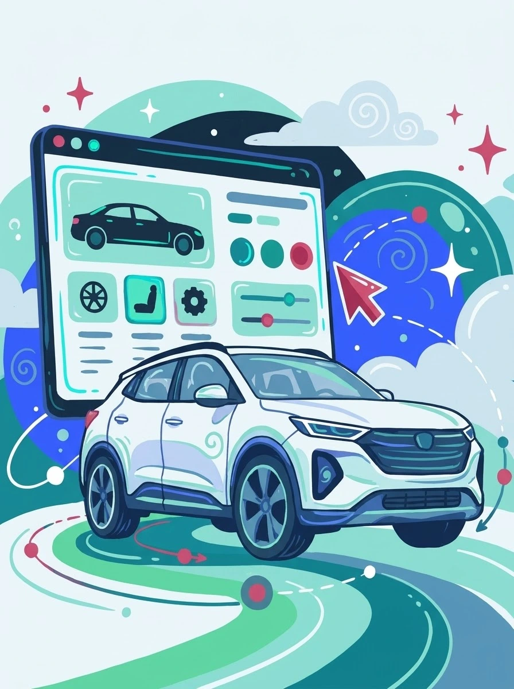

English-to-Canadian French translation, localization, editing and linguistic quality assurance.
I help teams deliver content that is accurate, natural and consistent—from technical documentation and digital experiences to institutional, commercial and editorial material. My approach combines linguistic judgment, terminology control and structured quality checks, with close attention to the context in which each text will be used.
A word rarely stands alone. Its meaning depends on the document, the audience, the task, the terminology already in use and the constraints of the medium. I look at those relationships as part of the work—not as details to address after the translation is complete.
That perspective informs my work in translation and localization, comparative revision, proofreading, machine translation post-editing (MTPE), linguistic QA and terminology. Whether I am reviewing a single deliverable or a large set of related content, the aim is the same: to make the language fit its purpose and hold together as a whole.
From first translation to final quality review, I support language projects that require accuracy, consistency and careful adaptation for Canadian French audiences.
Technical, digital, institutional, commercial and editorial content adapted to its audience and context.
A close review of meaning, language, style and consistency against the source, brief or established conventions.
Post-editing and structured checks for terminology, source–target alignment, formatting and other project-specific requirements.
Terminology resources, style guidance and repeatable checks that help keep related content consistent.
Careful adaptation of tone, intent and reader experience across formats and markets.
Text and data labelling, guided by explicit instructions.
My language work spans automotive, industrial, institutional, media, medical technology, financial, web and editorial contexts. The examples below illustrate different aspects of that practice.

Localized an interactive vehicle-configuration experience into Canadian French, maintaining consistency across filters, specifications, pricing and legal disclosures.
Applied official terminology and consulted TERMIUM Plus to support consistency across related deliveries.
Good linguistic work depends on more than a final spell-check. Depending on the assignment, I clarify the intended use and constraints, establish or verify terminology, review the content in its document or interface context, and carry out quality checks suited to the brief. The process is adapted to the work rather than imposed as a one-size-fits-all formula.
I work with computer-assisted translation tools, translation memories, terminology resources and quality-control features, while keeping human linguistic judgment central to decisions that require context.
Context, use & constraints
Terminology & resources
Document/interface context
My complementary work in document processing, workflow automation, Web technologies and AI-assisted instruction design gives me a practical view of how content moves through tools and systems.
A personal Gmail automation that translates recurring linguistic, contextual and sender-related clues into explicit rules and a weighted score.
Built with Google Apps Script and JavaScript, the workflow applies configurable checks to help flag low-credibility or low-relevance solicitations for automated handling.
“She has a genuine gift for writing, capturing the essence of a text while respecting its core message. She consistently meets editorial requirements, and production schedules and deadlines hold no secrets for her.”
Publisher, Éditions de Mortagne
“She is officially recognized as one of our most trusted proofreaders. We rely on her to screen and evaluate the final work of other French Canadian linguists for our team.”
Communications Associate, MotaWord
“Her professionalism, precise choice of words, and perfect understanding of our expectations make her a true specialist. I recommend her without hesitation.”
TV Host & Public Figure
LET’S WORK TOGETHER
Looking for reliable language expertise tailored to your audience, your content and your goals? Let’s discuss what you need.
Get in touch